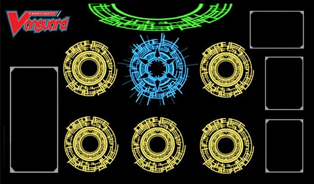

 |
จัดเด็ค
- เด็คจะต้องมีการ์ดจำนวน 50 ใบพอดี ห้ามขาด ห้ามเกิน (รวมแวนการ์ดตัวเริ่มด้วย)
- ต้องใส่ทริกเกอร์ยูนิทในกองการ์ด 16 ใบพอดี ห้ามขาด ห้ามเกิน (ฮีลทริกเกอร์ใส่ได้เพียง 4 ใบ ที่เหลือใส่ได้ไม่เกินแบบละ 8 ใบ)
- การ์ดที่ความสามารถ พิทักษ์ (Perfect Guard) สามารถใส่ได้ไม่เกิน 4 ใบ
- อย่างอื่นที่ไม่ได้อยู่ในกองการ์ด เช่น G ยูนิท, อิมเมจินนารี่กิฟท์, โทเคนยูนิท จะไม่ถูกนับรวม
- สามารถใส่การ์ดที่มีชื่อเหมือนกัน (แม้ว่าภาพ/ความสามารถจะต่าง) ได้ไม่เกิน 4 ใบเท่านั้น
- ยูนิทในเด็คควรเป็นแคลนเดียวกันและมีทั้งเกรด 0, 1, 2 และ 3 ไม่ควรใส่เกรดไหนมากหรือน้อยเกินไป ที่แนะนำควรใส่เป็น
- เกรด 3: 8 ใบ
- เกรด 2: 10 ใบ
- เกรด 1: 15 ใบ
- เกรด 0: 17 ใบ (รวมแวนการ์ดใบเริ่มต้น)
ก่อนเริ่มเกม
- นำแวนการ์ดใบเริ่มของคุณวางคว่ำหน้าไว้ที่ แวนการ์ดเซอร์เคิล และนำเด็คของคุณวางคว่ำหน้าไว้ข้างไหนก็ได้ที่ถนัด (ขวาเป็นมาตรฐาน, หากมี G ยูนิทหรืออิมเมจินนารี่กิฟท์ ให้วางไว้อีกฝั่งของกองการ์ด)
- หาลำดับผู้เล่นก่อนหลัง โดยจะเป่ายิ้งฉุบหรือทอยลูกเต๋าก็ได้ จะให้ผู้ชนะเริ่มก่อนหรือเลือกว่าใครเริ่มก่อนก็ได้
- จั่วการ์ด 5 ใบจากกองบนสุดมาไว้บนมือ หากไม่พอใจการ์ดที่จั่ว ให้คว่ำการ์ดที่ไม่ต้องการกี่ใบก็ได้และจั่วใหม่ตามจำนวนนั้น นำการ์ดที่เปลี่ยนกลับเข้าใต้กองและสับกองการ์ด
- การเปลี่ยนมือสามารถทำได้ครั้งเดียวเท่านั้น
- แนะนำให้ทิ้งเกรด 0 และการ์ดที่ซ้ำกัน
- พยายามให้มีเกรด 1, 2 (และ 3 หากทำได้) เตรียมพร้อมไว้บนมือ
- ขั้นตอนสุดท้าย หงายการ์ดใบเริ่มของคุณและพูดว่า "สแตนด์อัพ แวนการ์ด!"
แสตนด์ & ดรอว์เฟส
- หากคุณมีการ์ดที่อยู่ในสภาพ เรส (วางนอน) ให้ สแตนด์ (วางตั้ง) ขึ้นมาทั้งหมด จากนั้นจั่วการ์ดจากกองบนสุด 1 ใบ
ไรด์เฟส
- เลือกการ์ดจากบนมือคุณ 1 ใบที่มีเกรดเท่ากับ/มากกว่าแวนการ์ดปัจจุบันของคุณ 1 เกรด ทำการ "ไรด์" (วางทับแวนการ์ดลงไป)
- (ภาค G) -สไตรด์สเต็ป- (อยู่ในช่วงสนท้ายของไรด์เฟส ปลดปล่อยได้เมื่อแวนการ์ดของทั้ง 2 ฝ่ายเป็นเกรด 3) ทิ้งการ์ดบนมือ 1 ใบหรือมากกว่าให้ผลรวมเกรดเป็น 3 หรือสูงกว่า Stirde G ยูนิทจาก G โซนของคุณจากสภาพคว่ำ เมื่อจบเทิร์น นำยูนิทนั้นกลับเข้า G โซนของคุณในสภาพหงาย
เมนเฟส
- คอล: คุณสามารถอัญเชิญการ์ดบนมือของคุณลงสู่สนามในช่องเรียร์การ์ดเซอร์เคิล ยูนิทที่ถูกคอลจะเรียกว่า "เรียร์การ์ด"
- คุณสามารถขยับ/สลับตำแหน่งเรียร์การ์ดแถวข้างขึ้นลงได้ (แถวกลางจะติดแวนการ์ด)
- ใช้งานความสามารถประเภท ACTIVE ของยูนิทซึ่งใช้งานได้ในเฟสนี้เท่านั้น
ในเทิร์นแรกคนที่เริ่มก่อนจะสิ้นสุดแค่เฟสนี้
แบทเทิลเฟส
- ใช้ยูนิทที่สแตน อยู่ของคุณทำการโจมตี โดยการนอนการ์ดให้อยู่ในสภาพ เรส หาก เรียร์การ์ดแถวข้างหลังที่มีความสามารถ บูสท์ จะเป็นการบวก พาวเวอร์ของยูนิทนั้นให้ยูนิทข้างหน้าจนจบการต่อสู้
- ยูนิทจะโจมตีฮิทก็ต่อเมื่อมี พาวเวอร์ มากกว่าหรือเท่ากับเป้าหมาย
- -การ์ดสเต็ป- ในช่วงนี้คู่แข่งสามารถป้องกันได้ด้วยการคอล การ์เดี้ยน จากบนมือลงบน การ์เดี้ยนเซอร์เคิล กี่ใบก็ได้ โดยการนำ ชิลด์ของยูนิทที่คอลมาบวกกับ พาวเวอร์ของยูนิทที่กำลังถูกโจมตีให้มากกว่าพาวเวอร์ของยูนิทที่โจมตีเพื่อให้การโจมตีนั้นไม่ฮิท
- ยูนิทเกรด 2 มีความสามารถ อินเตอร์เซ็ปต์ คือสามารถเคลื่อนไปยัง การ์เดี้ยนเซอร์เคิล ได้จากช่องเรียร์การ์ดแถวหน้า
- ยูนิทที่ถูกคอลลง การ์เดี้ยนเซอร์เคิล จะถูกรีไทร์ลงดรอปโซนเมื่อจบการต่อสู้นั้น ไม่ว่าการโจมตีจะฮิทหรือไม่ฮิท
- หากประสงค์ไม่ป้องกัน ให้พูดว่า "ไม่ป้องกัน"
- เมื่อแวนการ์ดเริ่มโจมตีจะมีความสามารถในการ ไดรฟ์เช็ค คือแสดงการ์ดใบบนสุดจากกองและนำเข้า ทริกเกอร์โซน ใช้งานความสามารถของทริกเกอร์ยูนิทที่ถูกแสดง (ถ้าเจอ) จากนั้นนำการ์ดเหล่านั้นขึ้นมือ
- หากโจมตีฮิทแวนการ์ด คู่แข่งทำการ ดาเมจเช็ค คือแสดงการ์ดใบบนสุดจากกองและนำเข้า ทริกเกอร์โซน ตามจำนวน คริติคอลของยูนิทที่โจมตี จากนั้นนำการ์ดเหล่าเข้าสู่ ดาเมจโซน
- หากโจมตีฮิทเรียร์การ์ด ยูนิทนั้นจะถูกรีไทร์ลงดรอปโซน
เอนด์เฟส
พูดว่า "จบเทิร์น" และให้คู่แข่งได้เริ่มแสตนด์ & ดรอว์เฟส
วิธีเอาชนะ
- เกมจะจบลงเมื่อมีไฟท์เตอร์คนหนึ่งมีการ์ดอยู่ที่ดาเมจโซน 6 ใบ จะถือว่าแพ้โดยทันที
- เด็คเอาท์: หากกองการ์ดของไฟท์เตอร์ไม่มีการ์ดเหลือยู่เลยจะถือว่าแพ้เกมทันที
- ความสามารถของยูนิทบางตัวที่มีผลทำให้ชนะเกมทันที
|
|
.jpg)